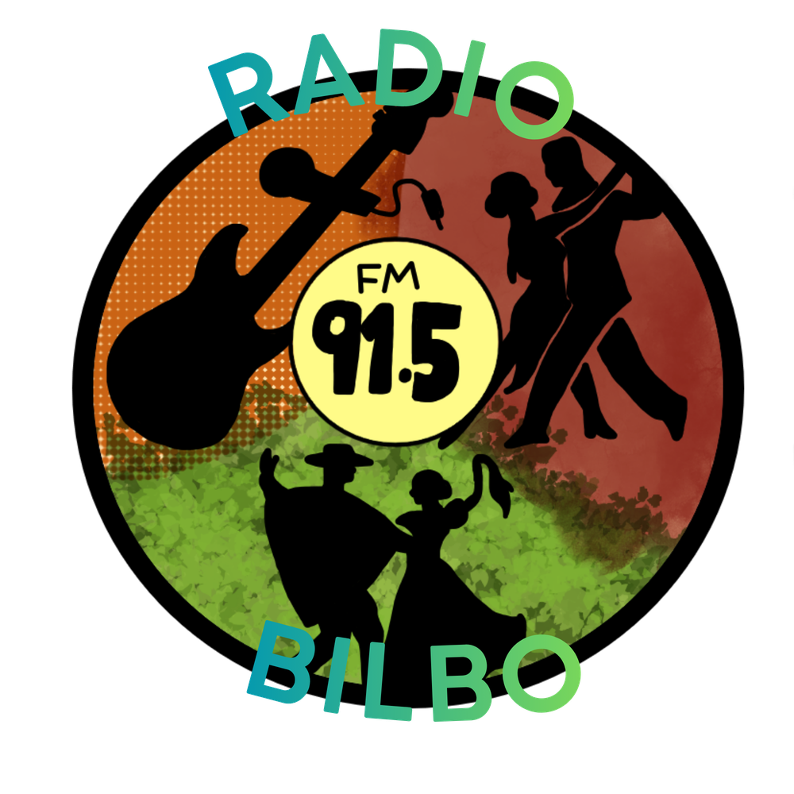

Tango y folklore
Arrancamos el día con el abrazo del tango y la raíz del folklore argentino.
Radio Bilbo 91.5 FM es la radio de Brandsen que conecta generaciones con tango, folklore y rock nacional. El espacio donde la esencia de nuestra cultura encuentra su lugar en el dial.
Cada momento del día tiene su sonido. Así suena Radio Bilbo de mañana a noche.
Arrancamos el día con el abrazo del tango y la raíz del folklore argentino.
La fuerza del rock de acá, con los clásicos y los temas que nunca pasan de moda, y algo de pop.
Cerramos el día con una selección de buenos lentos, acompañados de algo de rock nacional.
Nuestra programación está pensada para acompañarte durante todo el día con una propuesta que fusiona la historia y la actualidad.
Somos una radio nueva y estamos creciendo con la gente de Brandsen. Mantenemos siempre un estándar de calidad profesional en cada emisión, porque cada canción merece ser escuchada con el respeto que su historia construyó.

Nuestro sello reúne todo lo que somos: el abrazo del tango, la raíz del folklore y la fuerza del rock nacional. Una identidad que viaja por las ondas del 91.5 y cruza fronteras gracias a internet.
Accedé a nuestra transmisión en tiempo real desde el celular, la compu o la tele.
Hacé clic para escuchar la radio en vivo
REPRODUCTOR DE STREAMING
Mandanos tu saludo, pedí ese tema que querés escuchar o contanos qué te gustaría que suene. Te leemos por todos lados.